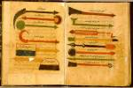

Abu
al-Qasim Kalaf b. cAbbas al-Zahrawi al-Andalusi (‘Albucasis’),
Al-Tas
De titel van dit medische handboek door al-Zahrawi (gestorven in circa 1009) betekent ‘Het ter beschikking stellen (namelijk van de medische wetenschap) aan hem die niet in staat is (deze zelf) samen te stellen’. Het gehele werk bestaat uit dertig hoofdstukken. Het eerste, tweede en dertigste, over respectievelijk fysiologie, nosologie en symptomatologie, en chirurgie, maken te zamen ongeveer de helft van de omvang uit.
Het Leidse handschrift bevat alleen het hoofdstuk over de chirurgie, en wekt in het algemeen de indruk een verkorte versie te zijn. Al-Zahrawi was in de tweede helft van de tiende eeuw als arts werkzaam in het Moorse Córdoba. Direct aan het begin van zijn werk beschouwde hij de chirurgie als een in zijn tijd ten onrechte verwaarloosde wetenschap: ‘Slechts geringe sporen zijn van de wetenschap van de chirurgie bewaard gebleven in de werken van de antieke auteurs, die dan ook nog te lijden hebben gehad van de fouten van afschrijvers, zodat hun betekenis onduidelijk is geworden en men moest twijfelen aan het nut daarvan. Daarom heb ik besloten om de chirurgie weer tot leven te wekken. [...] Ook zal ik afbeeldingen van brandijzers en andere chirurgische instrumenten met de bijbehorende verklaringen geven. De reden waarom het in onze tijd moeilijk is om een bekwaam chirurg te vinden, is hierin gelegen dat de geneeskunde een zaak van lange adem is. Wie deze kunde wil uitoefenen moet zich eerst met de anatomie vertrouwd maken, zoals Galenus deze heeft beschreven. Vervolgens moet hij zich bezighouden met de functies, vormen en vermenging van de verschillende organen, en met hun wederzijdse wisselwerkingen. Ten slotte moet hij zich precieze kennis verwerven van botten, zenuwen, spieren, slagaders en gewone aders [...]. Hippocrates zegt terecht dat velen zich arts noemen, maar dat weinigen het in de praktijk ook zijn. Dit alles geldt voor de chirurgie nog in het bijzonder.’
Al-Zahrawi heeft veel aan het werk van de Byzantijnse arts Paulus van Aegina (eerste
helft zevende eeuw) ontleend. Zijn hoofdstuk over de chirurgie bestaat uit drie
afdelingen. De eerste behandelt de cauterisatie met brandijzers en uitbijtende medicijnen.
Deze behandeling werd toegepast bij kanker, gangreen, fistels, aambeien, migraine,
chronische apoplexie, vergeetachtigheid (voor zover veroorzaakt door flegma), epilepsie,
melancholie, chronische tranenvloed, tandpijn, diarree, hernia en hydropsie. De tweede
afdeling behandelt het snijden, het openen van tumoren, ingrepen aan de tanden,
behandeling van verwondingen, amputaties, het uittrekken van pijlen, aderlaten en koppen
zetten; de derde fracturen en verstuikingen. Al-Zahrawi’s Tas
In het hier getoonde handschrift zijn meer dan honderd gekleurde afbeeldingen van
instrumenten opgenomen. Op de folio’s 93v-94r worden drie soorten getoond:
schraapmessen (Arabisch: ‘migrad’), zagen (Arabisch: ‘minšar] en een
snij-instrument (Arabisch: ‘miqt
Literatuur
- C. Brockelmann, Geschichte der arabischen Litteratur. Leiden 1937-1949. 5 dln, dl. I, p. 239.
- Fuat Sezgin, Geschichte des arabischen Schrifttums. Bd. III: Medizin, Pharmazie, Zoologie, Tierheilkunde, bis. ca. 430 H. Leiden 1970, p. 323-325.
- Manfred Ullmann, Die Medizin im Islam. Leiden 1970, p. 149-151.
- P. Voorhoeve, Handlist of Arabic manuscripts in the Library of the University of Leiden and other collections in The Netherlands. 2nd, enl. ed. The Hague [etc.] 1980 ( = Bibliotheca Universitatis Leidensis. Codices manuscripti. VII), p. 376.
- Tekstuitgave: Albucasis De chirurgia. Arabice et Latine. Ed.J. Channing. Oxonii 1778.
| vorige pagina | top pagina |